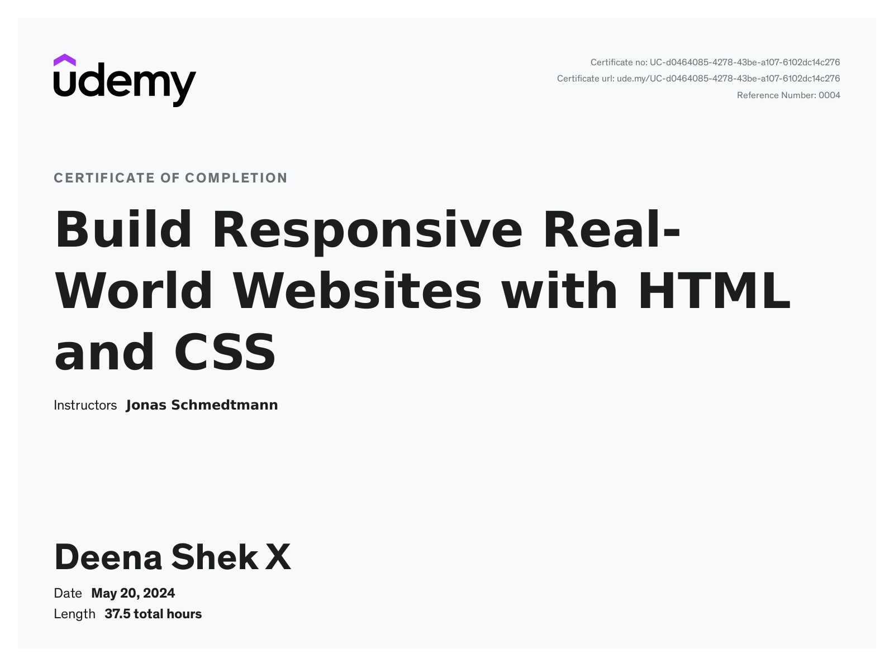

Let's see My Certifications
certificates
WEB DEVELOPMENT
- HTML
- CSS

Overview of "Build Responsive Real-World Websites with HTML
and CSS" by Jonas Schmedtmann on Udemy
The "Build Responsive Real-World Websites with HTML and CSS" course by
Jonas Schmedtmann, offered on Udemy, is a comprehensive, hands-on
program designed to equip students with the skills needed to create
modern, responsive websites. Targeted at beginners and intermediate
learners, the course emphasizes practical application and real-world
scenarios, ensuring that participants not only learn theoretical
concepts but also how to implement them effectively.
Key Components of the Course:
Foundational Knowledge:
-
HTML5: Detailed introduction to HTML5, covering
essential tags, elements, and best practices for structuring web
content.
-
CSS3: Comprehensive coverage of CSS3, including
selectors, properties, and techniques for styling web pages.
Responsive Design:
-
Flexbox: Mastering the CSS Flexbox layout module to
create flexible and responsive layouts.
-
Grid: Utilizing CSS Grid for advanced layout
capabilities.
-
Media Queries: Implementing media queries to ensure
websites look great on devices of all sizes.
Real-World Projects:
-
Building multiple projects from scratch to reinforce learning,
including a fully responsive landing page, a feature-rich portfolio
website, and more.
-
Emphasis on real-world application, ensuring learners can transition
smoothly from theory to practice.
Advanced Techniques:
-
Animations and Transitions: Adding interactivity and
enhancing user experience with CSS animations and transitions.
-
Responsive Images: Techniques for optimizing images
for various screen sizes and resolutions.
Professional Development:
-
Code Organization: Best practices for writing clean,
maintainable, and scalable code.
-
Optimization: Strategies for improving website
performance and speed.
Project-Based Learning:
-
Engaging projects that simulate real-world challenges and solutions,
providing a robust learning experience.
-
Step-by-step guidance through complex tasks, promoting hands-on
learning and problem-solving skills.
Learning Outcomes:
By the end of the course, participants will be able to:
-
Build fully responsive websites that work seamlessly across different
devices and browsers.
- Write clean, efficient, and well-organized HTML and CSS code.
-
Utilize modern CSS techniques such as Flexbox and Grid to create
complex, flexible layouts.
-
Implement CSS animations and transitions to enhance the user
experience.
-
Optimize web performance and ensure fast loading times for their
projects.
-
Create professional, visually appealing web pages that adhere to
industry standards.
Course Delivery:
-
Interactive Lectures: Engaging video lectures that
explain concepts clearly and concisely.
-
Practical Exercises: Hands-on exercises and quizzes
to reinforce learning and ensure comprehension.
-
Supportive Community: Access to a community of
learners for collaboration and support.
-
Lifetime Access: Lifetime access to course materials,
allowing for continuous learning and reference.
Conclusion:
The "Build Responsive Real-World Websites with HTML and CSS" course by
Jonas Schmedtmann is an invaluable resource for anyone looking to
develop their web development skills. With its blend of foundational
knowledge, advanced techniques, and real-world projects, the course
prepares students to build modern, responsive websites efficiently and
effectively. Whether you are a beginner looking to enter the field of
web development or an intermediate learner seeking to enhance your
skills, this course provides the tools and knowledge necessary to
succeed in the dynamic world of web design and development.
PROGRAMMING LANGUAGES
- C
- C++
CERTIFICATES
Overview of the C and C++ Completion Course at Bits CAD, Monday Market, Kanyakumari
The C and C++ Completion Course offered by Bits CAD, located in Monday Market, Kanyakumari, is a comprehensive training program designed to provide participants with in-depth knowledge and hands-on experience in C and C++ programming languages. This course is ideal for both beginners and those with some programming background who seek to enhance their skills and understanding of these foundational languages.
Key Components of the Course:
Foundational Knowledge:
- C Programming: Introduction to C programming, covering fundamental concepts, syntax, and best practices for writing efficient code.
- C++ Programming: Detailed exploration of C++ programming, focusing on object-oriented principles, advanced features, and application development.
Core Concepts:
- Data Types and Structures: Understanding various data types, structures, and their usage in C and C++.
- Control Structures: Mastering control structures such as loops, conditionals, and switch statements to control the flow of programs.
- Functions and Recursion: Learning how to create and utilize functions, including recursive functions, for modular programming.
Advanced Topics:
- Pointers and Memory Management: Deep dive into pointers, dynamic memory allocation, and memory management techniques.
- Object-Oriented Programming (OOP): Comprehensive study of OOP concepts including classes, objects, inheritance, polymorphism, and encapsulation in C++.
- Data Structures and Algorithms: Implementation and analysis of key data structures (e.g., arrays, linked lists, stacks, queues) and algorithms (e.g., sorting, searching).
Practical Application:
- Hands-on coding sessions and projects to apply theoretical knowledge in real-world scenarios.
- Development of mini-projects to reinforce learning and demonstrate proficiency in C and C++ programming.
Professional Development:
- Code Optimization: Techniques for writing optimized, high-performance code.
- Debugging and Testing: Methods for effective debugging and testing of programs to ensure reliability and correctness.
Learning Outcomes:
By the end of the course, participants will be able to:
- Write efficient and well-structured programs in C and C++.
- Understand and apply fundamental and advanced programming concepts.
- Develop applications using object-oriented programming techniques in C++.
- Implement and analyze data structures and algorithms.
- Optimize code for performance and manage memory effectively.
Course Delivery:
- Interactive Lectures: Engaging video and in-person lectures that explain concepts clearly and provide practical examples.
- Hands-on Exercises: Practical exercises and coding assignments to reinforce learning and ensure proficiency.
- Community Support: Access to a community of learners and instructors for collaboration and support.
- Course Materials: Comprehensive course materials, including lecture notes, sample code, and project templates.
Conclusion:
The C and C++ Completion Course at Bits CAD in Monday Market, Kanyakumari. With its well-rounded curriculum covering both foundational and advanced topics, hands-on coding sessions, and a focus on real-world application, this course is designed to prepare participants for successful careers in software development and related fields.
Whether you are a beginner starting your programming journey or an experienced coder looking to deepen your understanding of C and C++, the C and C++ Completion Course at Bits CAD provides the comprehensive training and support needed to achieve your goals and excel in the competitive tech industry.
Backhome